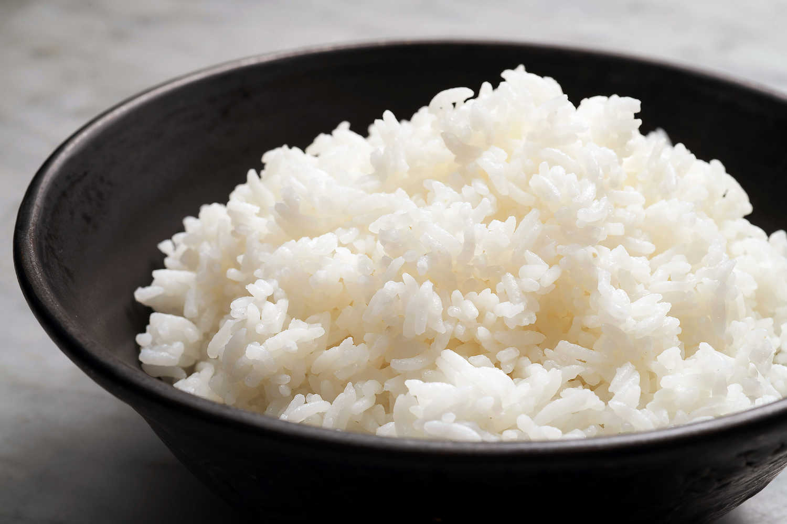

Steamed Rice

Description
Fool-proof recipe for classic steamed rice
Ingredients
Any kind of rice
Water
Steps
- Wash rice with plain water by rinsing and stirring in water, then pouring out water when cloudy. Repeat until water runs clear after stirred.
- Add rice and water to rice cooker in 1:1 ratio. You can also guage the water level by placing your pointer finger on top of the rice surface,
the water should barely reach the line of your first finger joint.
- Turn on rice cooker and wait until it finishes.
- Fluff up rice with scooper when done
- Enjoy!